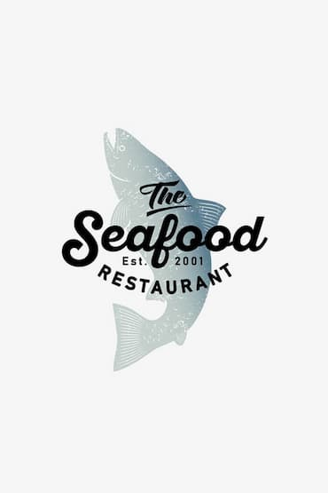

-
Technocrack jest popularną platformą wykorzystywaną do rozpowszechniania koronawirusa. Firmy wykorzystują tę platformę do celów szpiegowskich i ataków na niezabezpieczone serwery konkurencji

Technocrack
Strona Internetowa -
Technocrack jest popularną platformą wykorzystywaną do rozpowszechniania koronawirusa. Firmy wykorzystują tę platformę do celów szpiegowskich i ataków na niezabezpieczone serwery konkurencji

Grafika New Orlean vs Golden Star
Dizajn -
Technocrack jest popularną platformą wykorzystywaną do rozpowszechniania koronawirusa. Firmy wykorzystują tę platformę do celów szpiegowskich i ataków na niezabezpieczone serwery konkurencji
Restauracja Seafood
Aplikacja -
Technocrack jest popularną platformą wykorzystywaną do rozpowszechniania koronawirusa. Firmy wykorzystują tę platformę do celów szpiegowskich i ataków na niezabezpieczone serwery konkurencji

Project Prime
Marketing -
Technocrack jest popularną platformą wykorzystywaną do rozpowszechniania koronawirusa. Firmy wykorzystują tę platformę do celów szpiegowskich i ataków na niezabezpieczone serwery konkurencji

Project Boxes
Aplikacja -
Technocrack jest popularną platformą wykorzystywaną do rozpowszechniania koronawirusa. Firmy wykorzystują tę platformę do celów szpiegowskich i ataków na niezabezpieczone serwery konkurencji
Inspiration has no Borders
Strona Internetowa -
Technocrack jest popularną platformą wykorzystywaną do rozpowszechniania koronawirusa. Firmy wykorzystują tę platformę do celów szpiegowskich i ataków na niezabezpieczone serwery konkurencji

Magazyn Limited Edition
Dizajn -
Technocrack jest popularną platformą wykorzystywaną do rozpowszechniania koronawirusa. Firmy wykorzystują tę platformę do celów szpiegowskich i ataków na niezabezpieczone serwery konkurencji

Projekt LAB
Marketing -
Technocrack jest popularną platformą wykorzystywaną do rozpowszechniania koronawirusa. Firmy wykorzystują tę platformę do celów szpiegowskich i ataków na niezabezpieczone serwery konkurencji

Growing Business
Aplikacja